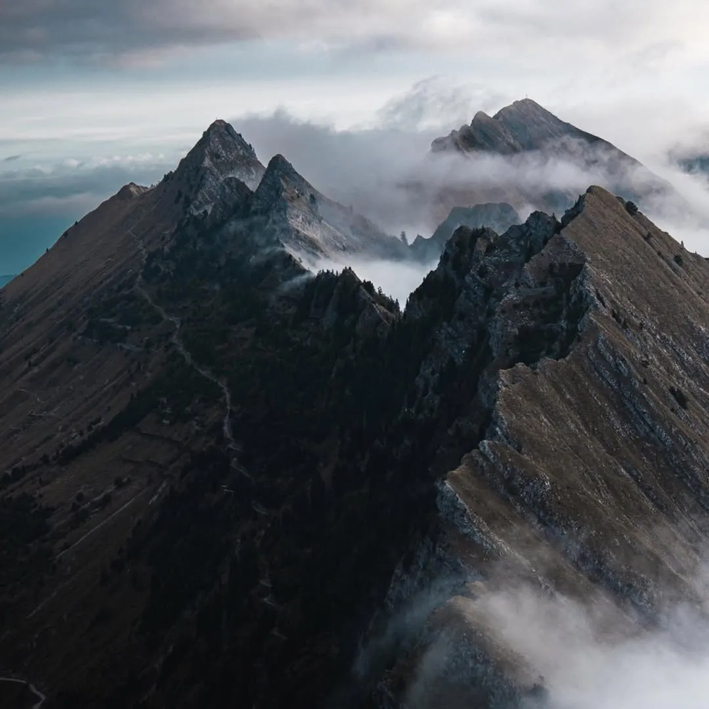
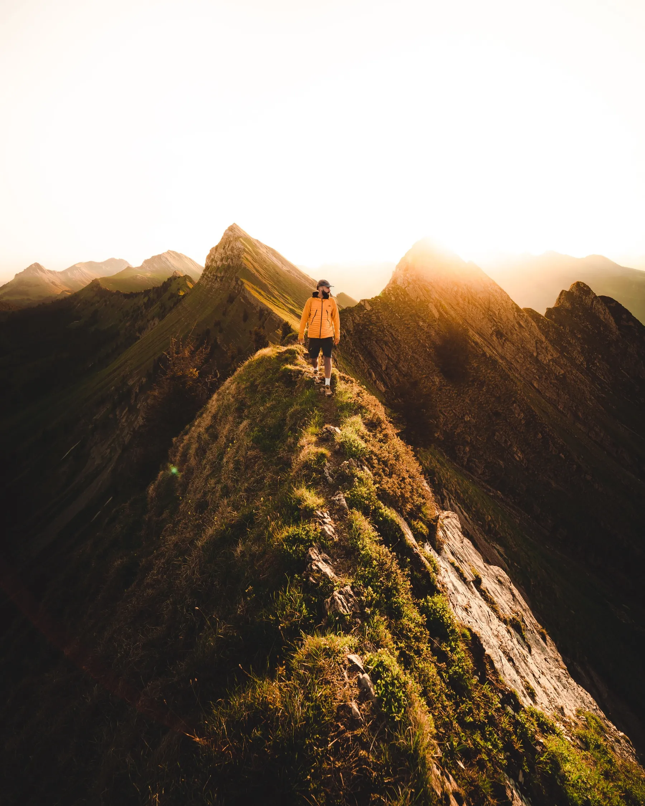
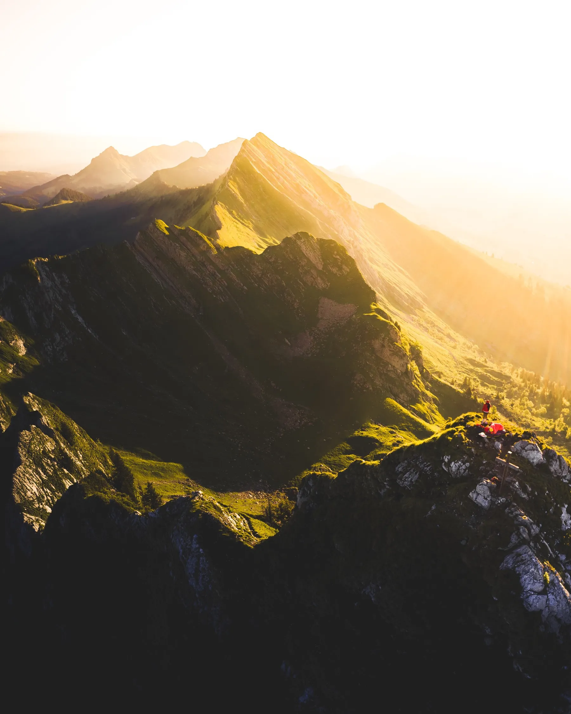
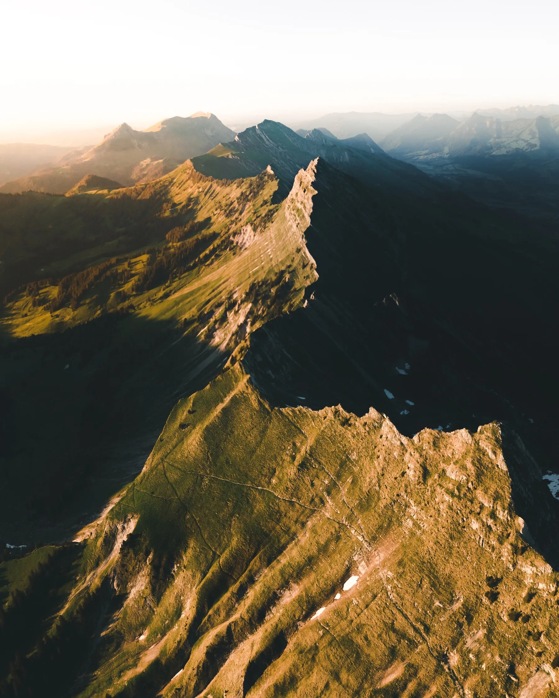

1 / 5 Photo · @danslafosse.mediasA NARROW RIDGE ABOVE COL DE JAMAN
Cap au Moine
A knife-edge ridge you reach from Col de Jaman. The view down to Lac Léman is one of the most dramatic in the whole country.
RegionRiviera vaudoise
AccessDrive + 1 hr hike
EffortModerate. Exposed
Best lightSunrise or sunset